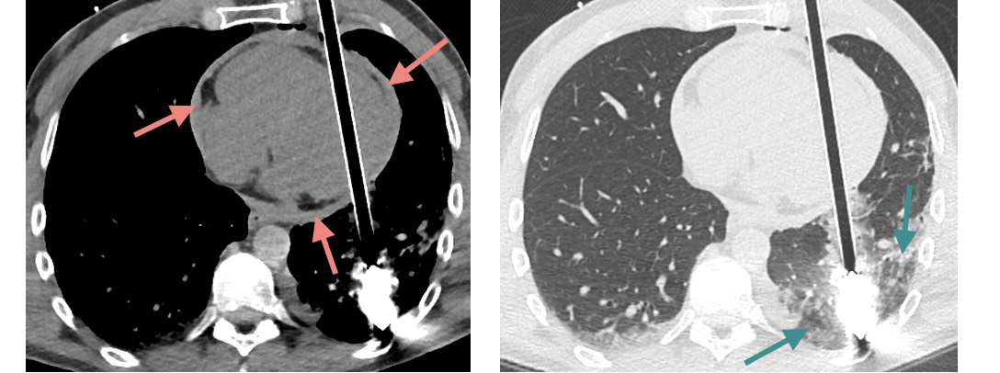

Modalités d'imagerie
« Trouvons la cause, nous trouverons le remède » Hippocrate (IVème s. av. J-C)
Radiographie standard 
Opacité pulmonaire acrobatique
Une radiographie thoracique est réalisée autant que possible debout, en incidence postéro-antérieure (sinon élargissement de la silhouette cardiaque), et après avoir enlevé les bijoux et autre matériel responsable d'opacités (ici piercing au téton).
 Critères de qualité : champ d'acquisition complet, cliché centré, inspiration profonde
Critères de qualité : champ d'acquisition complet, cliché centré, inspiration profonde

Echographie 
 À privilégier chez l'enfant et la femme enceinte
À privilégier chez l'enfant et la femme enceinte 
 Peu contributive en cas d'obésité
Peu contributive en cas d'obésité 
- Structure borgne appendue au bas fond cæcal croisant généralement l'artère iliaque ext.
- Normalement < 7 mm, compressible, sans douleur au passage de la sonde en regard
- Souvent non visualisable en raison d'interpositions digestives aériques
Cône d'ombre postérieur = air ou calcification
Scanner
Eliminer une grossesse chez le femme en âge de procréer 
Contre-indications aux produits de contraste iodés : allergie, IRA et IRC sévère
Densités des structures
Par définition, la densité de l'eau est de 0 UH et celle de l'air est de -1000 UH.
Ascite cirrhotique et hématome intrapéritonéal
- Ascite de grande abondance
- Foie de cirrhose avec multiples lésions hypodenses
- Hématome du muscle grand droit gauche s'étendant dans l'espace prévésical

Le sang frais est spontanément hyperdense
Fenêtrage de visualisation 
Le fenêtrage consiste à sélectionner un intervalle de densités (en Unités Hounsfield) et à l'étaler sur l'ensemble des niveaux de gris : les densités supérieures aux maximum de la fenêtre choisie sont affichées en blancs et les densités inférieures au minimum sont en noir.
Carreau d'arbalète traversant le ventricule gauche
Le fenêtrage permet d'accroître le contraste des structures étudiées
- Fenêtre tissus mous (-150 à 250 UH) : hémopéricarde
- Fenêtre parenchymateux (-1350 à 150 UH) : contusion pulmonaire
- Fenêtre osseuse (-1400 à 2200 UH) : pas de fracture

Injection de produit de contraste 
Le protocole d'acquisition est adapté à l'indication : merci de la préciser !
Uroscanner pour bilan étiologique d'une hématurie
- Acquisition sans injection : calcifications aortiques et phlébolithes pelviens
- Temps artériel (10-40s) : opacification des artères et des cortex rénaux
Rate physiologiquement « tigrée » (rehaussement hétérogène) au temps artériel
- Temps veineux (50-90s) : rehaussement homogène des organes pleins
- Temps excréteur (10 min) : opacification des voies urinaires
indispensable pour voir les 2 tumeurs dans l'uretère pelvien gauche
Post-traitement 
Ce diaporama détaille les outils de post-traitement, notamment le MIP.
IRM
Adaptée à l'étude des tissus mous mais aussi des os et des articulations, elle est souvent complémentaire au scanner pour la caractérisation de lésion. Le temps d'acquisition est plus long, elle est donc plus sensible aux artéfacts de mouvements et peu contributive pour l'étude pulmonaire.
Claustrophobie, corps étranger intraoculaire, pacemaker, neurostimulateur, implant cochléaire, pompe à insuline, et anciennes générations de valves cardiaques mécaniques et de clips chirurgicaux
Lésion dans le muscle deltoïde dont le signal est le même que la graisse sous-cutanée

Séquences « fat sat » = avec saturation de la graisse car elle est hypointense
Pour reconnaître les différentes séquences cet article est excellent.
TEP-TDM
Le FDG (fluorodésoxyglucose) est le principal radiotraceur utilisé.
Artérite à cellules géantes
- Hypermétabolisme des gros vaisseaux
- Captation physiologique du cerveau et des voies excrétrices urinaires

Hypermétabolisme = inflammatoire, infectieux ou néoplasique